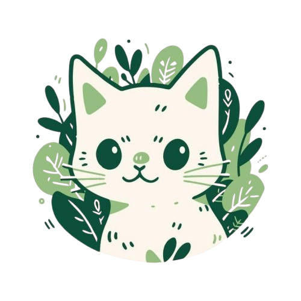

PawMatch es una plataforma que busca transformar el proceso de adopción de mascotas mediante la colaboración con albergues y rescatistas. Su objetivo principal es conectar a personas interesadas en adoptar con refugios y cuidadores, ofreciendo una plataforma intuitiva y eficiente que facilite la gestión de adopciones, brinde información detallada sobre cada mascota y agilice la comunicación entre adoptantes y responsables de los albergues.
